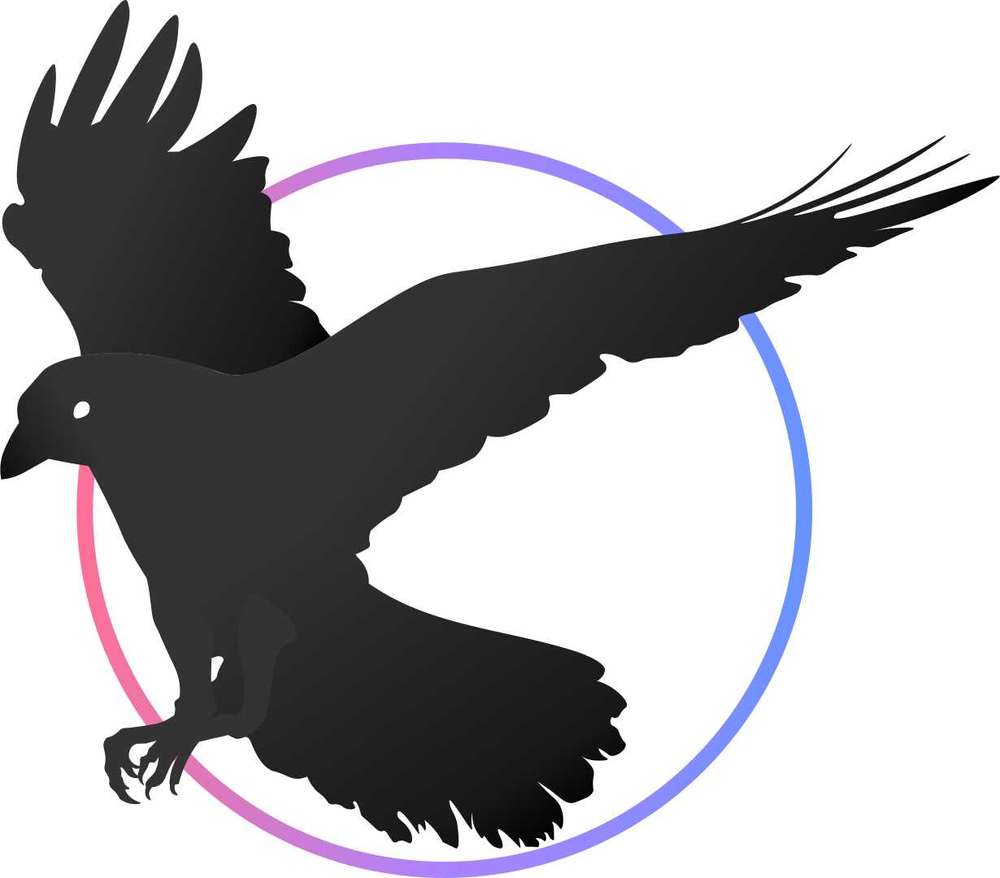

Making
Rastors & Vectors
Rastors & Vectors
What are they
Rasters deal with pixels on the screens and are used for photographs and images, while vectors uses mathematical functions and are characterised by clean lines.
In this module, we are tasked to do a simple raster and vector project to familiarise ourselves with the tools we are going to use later in the module.
What to do

Here is a random photo of me. The following process is done using Adobe Photoshop.
Due to bad compression of the photo, I have to find ways to reduce the noise (visual distortion) from the photo. I use noise filter to make the photo look smoother and less pixelated.
I use Magic Wand tool to selectively outline my head for cropping. Minor adjustments to the crop are made on the edges of my hair and neck.
Once that is done, I downloaded a random image of a white room and place it behind my cropped image. For a more detailed tutorial on how to photoshop images, I reference this Youtube video to make this profile photo. Learn More
Adobe Photoshop
The controls in Adobe Photoshop are very simple to use and do not take alot of time to process. There are also an abundant of tutorials readily available in Youtube compared to other photoshop softwares. Using Adobe Photoshops comes with cloudsaves which saves your work instantly whenever you make changes. This prevent lost of work if any unexpected crashes happen. Adobe Photoshop offers alot of settings and features when it comes to editing your photos to make them photos look good.

This is a image of a Raven. This following process is done using Adobe Illustrator.
I use Curvature tool to trace the image. I divided the work into 4 different layers: Head, Body, Wings & Legs.
 With Background
With Background
After spending 2 hours, the I filled in the color grey to see how the looked. Comparing with the original image, the vector I've created looked almost identical. Now with the finishing touches.
Each layer is given different shades of grey to differentiate them from each other. This is done using color gradient to make the different parts of the Raven look realistisc. In addition, a circle with a gradient stroke to make the logo look nicer.
Adobe Illustrator
Compared to the 2 other vector softwares I have tried which are Gravit and Inkscape, Adobe Illustrator is a good software for those who want to take a step further to make good graphics. Similarly to Adobe Photoshop, the cloudsaves are reliable compared to Gravit and Inkscape. For those of you want to go for a begineer-friendly software, you can try Gravit which has simpler UI and better controls in my opinion. However, Gravit cloudsaves are buggy based on my experience. Both Inkscape and Adobe Illustrator has similar UI layouts and controls but Inkscape feels harder based on how its tools work. You can download Gravit and Inkscape for free and offers similar functions like Adobe Illustrator which is premium and will make your wallet cry unless you somehow have education access from your school.